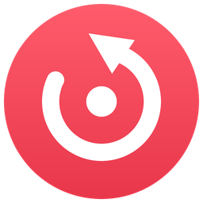

The last minute,
one key away.

Replay quietly keeps the last minute of your game and saves it the moment you press Alt F10. It records only the game window, starts and stops with your games, and the whole app is one 0.7 MB file.
Get Replay for Windows
Free. Windows 10 and 11. Source code
Last 1:00 kept in memory, about 108 MB at 1080p60. Older footage drops off as you play.
Get Replay
Download one file and run it. Replay lives in the tray and starts recording when a game is in front. Press Alt F10 whenever something happens worth keeping.
Windows 10 (1903+) and 11
NVIDIA, AMD or Intel GPU recommended
750 KB
Download for Windows
If Windows warns you, choose More info → Run anyway.
An early release
Version 0.1. Recording a single game window is new, so if a clip looks wrong, the log in %LOCALAPPDATA%\Replay shows what happened.